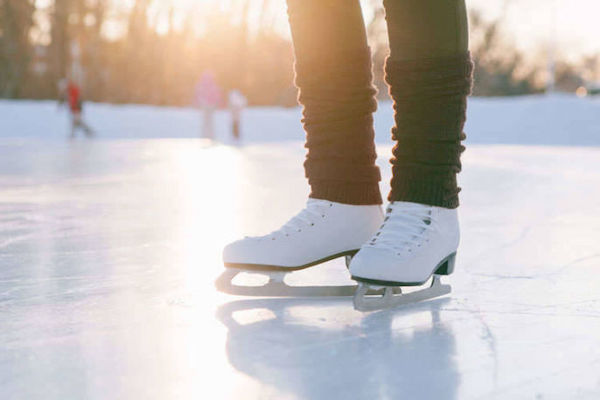
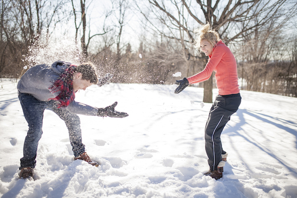

Slidošana
Lai gan slidot var arī vasarā, ziemā to var darīt zem atklātas debess!
Slēpošana un snovošana

Kad vēl var slēpot un snovot pa sniegotajiem kalniem, ja ne ziemā!
Pikošanās
Nav jābūt baigajiem sportistiem, lai papriecātos par ziemu... Pikošanās un sniegavīru celšana arī ir jauka aktivitāte!